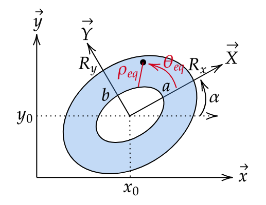

The Zernike polynomials \(Z_{n}^{m}(\rho, \theta)\) are defined on the unit disk \((0 \leq \rho \leq 1, \theta)\) as follows:
\[Z_{n}^{m}(\rho, \theta) = R_{n}^{m}(\rho) \cos(m \theta) \quad \text{if} \quad m \geq 0\]
\[Z_{n}^{m}(\rho, \theta) = R_{n}^{-m}(\rho) \sin(-m \theta) \quad \text{if} \quad m < 0\]
Note
If \(|m| > n\) or \(n < 0\) , or \((n - m)\) is odd the zernike polynomial is set to zero.
The radial polynomials \(R_{n}^{m}(\rho)\) are defined as follows:
\[R_{n}^{m}(\rho) = \sum_{k=0}^{(n-m)/2} \frac{(-1)^k (n-k)!}{k! ((n+m)/2 - k)! ((n-m)/2 - k)!} \rho^{n-2k}\]
Note
If :math:` m > n`, or \(m < 0\) or \(n < 0\) , or \((n - m)\) is odd the radial polynomial is set to zero.
The computation of the factorial is done using the function scipy.special.gammaln()
\[\text{log}(n!) = \text{gammaln}(n+1)\]
So the coefficient of the radial polynomial is computed as follows:
\[\frac{(n-k)!}{k! ((n+m)/2 - k)! ((n-m)/2 - k)!} = \text{exp} (\text{gammaln}(n-k+1) - \text{gammaln}(k+1) - \text{gammaln}((n+m)/2 - k + 1) - \text{gammaln}((n-m)/2 - k + 1))\]
The derivative of order (derivative (a)) of the Zernike polynomial with respect to rho and order (derivative (b)) with respect to theta is defined as follows :
\[\frac{\partial^{a}\partial^{b}Z_{n}^{m}(\rho, \theta)}{\partial \rho^{a} \partial \theta^{b}} = \frac{\partial^{a}R_{n}^{m}(\rho)}{\partial \rho^{a}} \frac{\partial^{b}\cos(m \theta)}{\partial \theta^{b}} \quad \text{if} \quad m > 0\]
\[\frac{\partial^{a}\partial^{b}Z_{n}^{m}(\rho, \theta)}{\partial \rho^{a} \partial \theta^{b}} = \frac{\partial^{a}R_{n}^{-m}(\rho)}{\partial \rho^{a}} \frac{\partial^{b}\sin(-m \theta)}{\partial \theta^{b}} \quad \text{if} \quad m < 0\]
The derivative of order (derivative (a)) of the radial Zernike polynomial is defined as follows :
\[\frac{d^{a}R_{n}^{m}(\rho)}{d\rho^{a}} = \sum_{k=0}^{(n-m)/2} \frac{(-1)^k (n-k)!}{k! ((n+m)/2 - k)! ((n-m)/2 - k)!} (n-2k) (n-2k-1) \ldots (n-2k-a+1) \rho^{n-2k-a}\]
The Zernike polynomials can be extended to a elliptical annulus domain \(G\) as follows:

The parameters to define the extended domain of the Zernike polynomial.
The elliptical domain \(G\) is defined by the following coefficients:
\(R_x\) and \(R_y\) are the lengths of the semi-axis of the ellipse.
\(x_0\) and \(y_0\) are the coordinates of the center of the ellipse.
\(\alpha\) is the rotation angle of the ellipse in radians.
\(h=\frac{a}{R_x}=\frac{b}{R_y}\) defining the inner boundary of the ellipse.
The applied mapping is as follows:
\[Zxy_{n}^{m}(x, y) = Z_{n}^{m}\left(\rho_{eq} = \frac{r - h}{1 - h}, \theta_{eq} = \theta \right)\]
Where:
\[r = \sqrt{\left(\frac{X}{R_x}\right)^{2} + \left(\frac{Y}{R_y}\right)^{2}}\]
\[\theta = \text{atan2} (\frac{Y}{R_y}, \frac{X}{R_x})\]
\[X = \cos(\alpha) (x - x_0) + \sin(\alpha) (y - y_0)\]
\[Y = -\sin(\alpha) (x - x_0) + \cos(\alpha) (y - y_0)\]
See also
For the mathematical development of the method, see the paper Generalization of Zernike polynomials for regular portions of circles and ellipses by Rafael Navarro, José L. López, José Rx. Díaz, and Ester Pérez Sinusía.
The associated paper is available in the resources folder of the package.
Download the PDF : PDF
The derivatives with respect to x and y can be computed using the chain rule.
\[\frac{\partial Zxy_{n}^{m}}{\partial z} = \frac{\partial Z_{n}^{m}}{\partial \rho_{eq}} \cdot \frac{\partial \rho_{eq}}{\partial z} + \frac{\partial Z_{n}^{m}}{\partial \theta_{eq}} \cdot \frac{\partial \theta_{eq}}{\partial z}\]
\[\frac{\partial^{2} Zxy_{n}^{m}}{\partial \omega \partial z} = \left(\frac{\partial^{2} Z_{n}^{m}}{\partial \rho_{eq}^{2}} \cdot \frac{\partial \rho_{eq}}{\partial \omega} + \frac{\partial^{2} Z_{n}^{m}}{\partial \rho_{eq} \partial \theta_{eq}} \cdot \frac{\partial \theta_{eq}}{\partial \omega}\right) \cdot \frac{\partial \rho_{eq}}{\partial z} + \frac{\partial Z_{n}^{m}}{\partial \rho_{eq}} \cdot \frac{\partial^{2} \rho_{eq}}{\partial \omega \partial z} + \left(\frac{\partial^{2} Z_{n}^{m}}{\partial \theta_{eq} \partial \rho_{eq}} \cdot \frac{\partial \rho_{eq}}{\partial \omega} + \frac{\partial^{2} Z_{n}^{m}}{\partial \theta_{eq}^{2}} \cdot \frac{\partial \theta_{eq}}{\partial \omega}\right) \cdot \frac{\partial \theta_{eq}}{\partial z} + \frac{\partial Z_{n}^{m}}{\partial \theta_{eq}} \cdot \frac{\partial^{2} \theta_{eq}}{\partial \omega \partial z}\]
where:
\[\frac{\partial \rho_{eq}}{\partial z} = \frac{1}{1 - h} \cdot \frac{1}{r} \cdot \left( \frac{X}{R_x^2} \cdot \frac{\partial X}{\partial z} + \frac{Y}{R_y^2} \cdot \frac{\partial Y}{\partial z} \right)\]
\[\frac{\partial \theta_{eq}}{\partial z} = \frac{1}{R_x R_y} \cdot \frac{1}{r^2} \cdot \left( X \cdot \frac{\partial Y}{\partial z} - Y \cdot \frac{\partial X}{\partial z} \right)\]
And for the second order derivatives:
\[\frac{\partial^{2} \rho_{eq}}{\partial \omega \partial z} = \frac{1}{1 - h} \cdot \left\{ \frac{1}{r} \cdot \left( \frac{1}{R_x^2} \frac{\partial X}{\partial \omega} \cdot \frac{\partial X}{\partial z} + \frac{1}{R_y^2} \frac{\partial Y}{\partial \omega} \cdot \frac{\partial Y}{\partial z} \right) - \frac{1}{r^3} \cdot \left( \frac{X}{R_x^2} \cdot \frac{\partial X}{\partial \omega} + \frac{Y}{R_y^2} \cdot \frac{\partial Y}{\partial \omega} \right) \cdot \left( \frac{X}{R_x^2} \cdot \frac{\partial X}{\partial z} + \frac{Y}{R_y^2} \cdot \frac{\partial Y}{\partial z} \right) \right\}\]
\[\frac{\partial^{2} \theta_{eq}}{\partial \omega \partial z} = \frac{1}{R_x R_y} \cdot \left\{ \frac{1}{r^2} \cdot \left( \frac{\partial X}{\partial \omega} \cdot \frac{\partial Y}{\partial z} - \frac{\partial Y}{\partial \omega} \cdot \frac{\partial X}{\partial z} \right) - \frac{2}{r^4} \cdot \left( X \cdot \frac{\partial Y}{\partial z} - Y \cdot \frac{\partial X}{\partial z} \right) \cdot \left( \frac{X}{R_x^2} \cdot \frac{\partial X}{\partial \omega} + \frac{Y}{R_y^2} \cdot \frac{\partial Y}{\partial \omega} \right) \right\}\]
{kind=link}